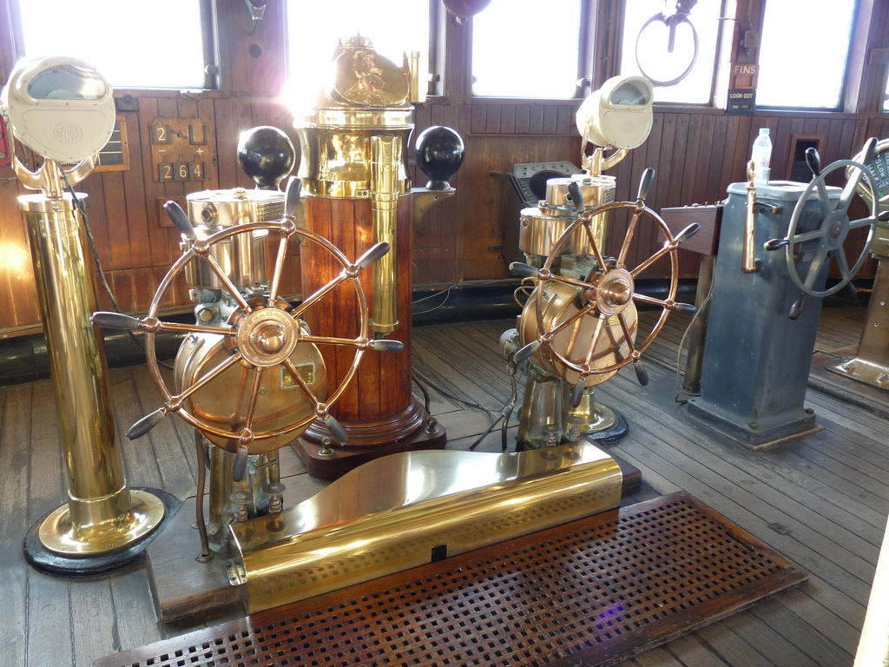
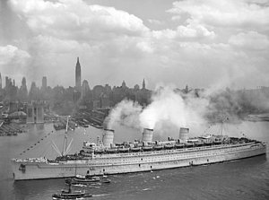
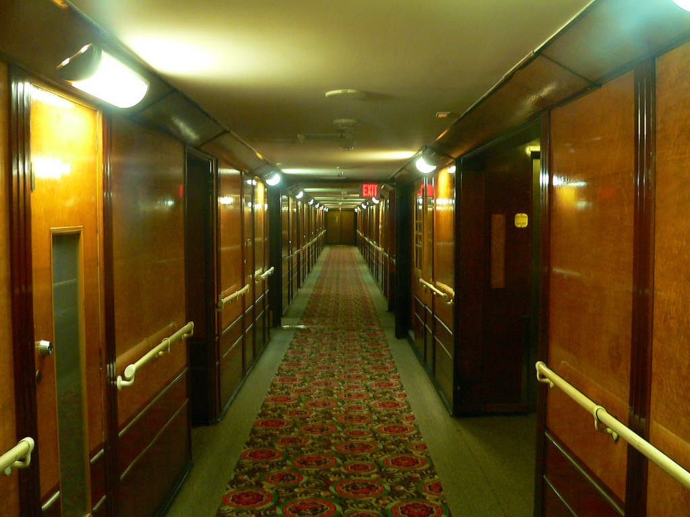
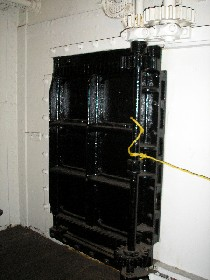

Visit our ship, The RMS Queen Mary, in Long Beach, California!! Our ship has
been voted one of the Top 10 Most Haunted Places in America by Time magazine!
Among the many, many ghosts who still haunt this ship are sailors who died in
the engine room, a "lady in white", and children who have drowned in the ship's
pool. This spot is sure to spook you! Contact us today to book a tour, dine with us,
or stay aboard this haunted ship!
The current resting spot of the RMS Queen Mary, in Long Beach,
California. Come visit! The views are beautiful!

The ship's wheel, where the captain and a select crew would
control the path of the ship.

Once a luxury ship cruising the Atlantic, the RMS Queen Mary had
high-class travelers, including Sir Winston Churchill.

The haunted corridors of the RMS Queen Mary. You will get the
chills just walking up and down the empty halls of this once luxury ship.

The 13th door in the engine room has crushed and killed at least
two men in the ship's lifetime. Definitely a must see when you go!
Other things around Long Beach that you will love:
Knott's Berry Farm- A family friendly amusement park! It even has a Ghost Town
Section of the park! If you have kids, you'll definitely want to make a stop
here!
Aquarium of the Pacific- Explore the world's largest ocean here! Features
marine life, penguins, and frogs!
Naples Island- See the beautiful canals, take a gondola tour, or rent a stand
up paddle board! Great for young adults and adults!
Bolsa Chica Ecological Reserve- This 1300 acre preserve is home to over 200
avian species! A favorite to the locals, the preserve is a beautiful spot to
visit!
Reviews:
Good for the whole family
The RMS Queen Mary tours were great fun for our 8 year old daughter
and 15 year old son. Definitely will not give them bad dreams, but spooked all of
us! I highly recommend coming here for vacation, as the location is perfect!
-Shawn W.
Creepy!!
The 13th door story really had my party spooked for the rest of our
stay! Make sure you see it!! -Anonymous
A must see...
This ship is ENORMOUS! While fascinating, it is so scary! Everyone
I’ve ever talked to about this ship has loved it, and I now do as well. Be
prepared to be spooked! -Caren R.